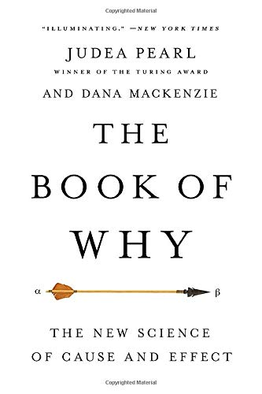
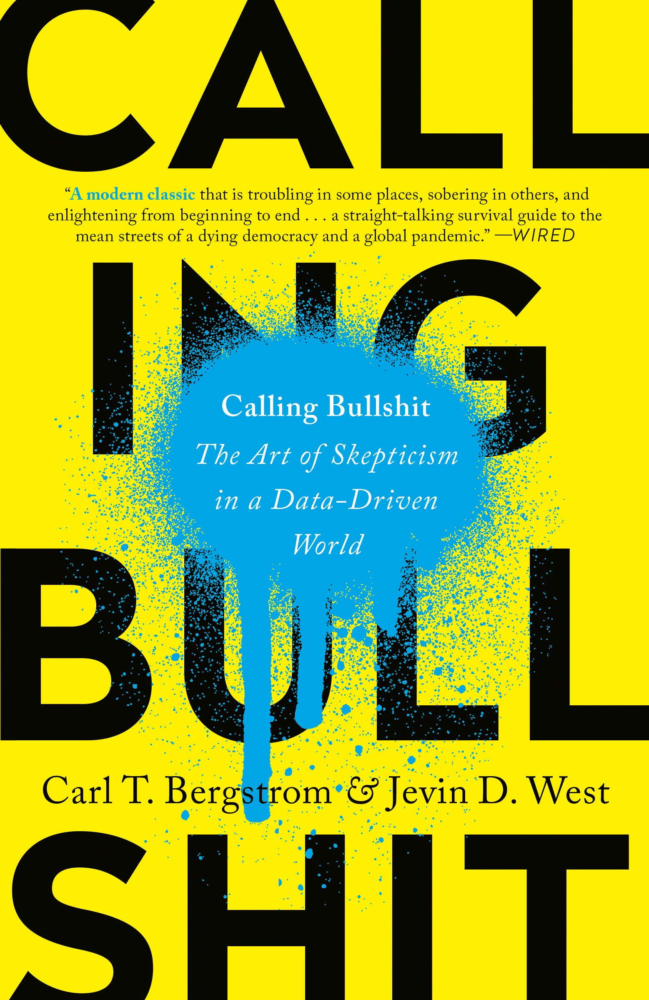

Five books on thinking clearly
| 1 January, 2022
This story was originally published in my fortnightly deep-dive newsletter, The Interval. You can read more about it here.
Sharing five books that are central to The Interval’s theme: clear thinking.
It is hard to recommend books. Few have quasi-universal appeal and reading tastes vary widely: a mind-blowing book for me can be mind-numbing for you. In addition, none of the books in the following list are leisurely reads. So to make it easy, I briefly describe the reader who I think will find the book useful. I hope that helps.

If you have read the work of Daniel Kahneman (“Thinking Fast and Slow”) or Nassim Nicholas Taleb (“Fooled by Randomness” or any other), you should read Philip Tetlock. Economist Tyler Cowen calls him one of the “greatest social scientists in the world” but his books have not reached the audience as wide as the other two. (If you haven’t read either, consider it.)
Tetlock’s research spanning three decades has shown that the average expert is no better than dart-throwing chimps — meaning, their predictions were as good as flipping a coin. But the crucial thing is this: there was a sub-group who did better than chimps and consistently maintained a good hit rate with predictions. Tetlock calls them superforecasters and tells us about their method in his book Superforecasting co-authored with Dan Garnder.
This one is for those who want a better way to think about the future and understand why it’s hard. There is a world between “math models are the best guide to future” and “all forecasting is bunk” which the book explores. It also offers solid insights on decision making under uncertainty. Tetlock’s counterintuitive take on the Iraq WMD intelligence failure and the discussion on Barack Obama’s decision to raid on Osama bin Laden’s compound gave me a lot to think about.
The book is full of interesting stories and examples that makes it an easy read.

I will start with the book’s weakness: writing. It was simple enough that I finished it in two sittings but it was not a delightful read. An editor could have helped shape the book better.
But the book is jam-packed with practical ideas about rational thinking and decision making. Chapters are structured around nineteen sentence-long nuggets, each of which capture ideas of Harvard professor Richard Zeckhauser to think about problems from first principles. It has a bent towards policy but what one learns applies to everyday life decisions. The author documents case studies from the professor’s former students to show how these ideas helped them in real-world decisions.
From the book’s abstract:
You will learn how one colleague saved money on her wedding by thinking probabilistically, how Richard and his wife Sally made an agonizing health decision that significantly boosted Sally’s survival probabilities, and how the prime minister of Singapore, Lee Hsien Loong, used a maxim he learned from Richard 40 years ago to understand and deal with COVID-19 in his nation.
For those new to probabilistic thinking and don’t have a framework to account for uncertainty, this one is a great primer to get started, especially because of the wide-ranging examples.

If you have ever said “correlation is not causation” and felt smart, I highly recommend Judea Pearl’s The Book of Why to start figuring out what causation is if not correlation. Others better avoid: it’s a dense book diving deep into statistical and philosophical ideas on the utility of data to understand cause and effect relationships.
The book falls in the now-popular category of scientists trying to make their work accessible to a wider audience. Yet, I think that readers who have consciously struggled to answer the “why” questions — they are the hardest among the five W’s and one H (who, what, when, where, why, how) to be sure about — will find this book relevant and appreciate it the most.
Pearl says the science of “causal inference” is new which helps us articulate and answer questions like these (taken from the book’s introduction):
- How effective is a given treatment in preventing a disease?
- Did the new tax law cause our sales to go up, or was it our advertising campaign?
- What is the healthcare cost attributable to obesity?
- Can hiring records prove an employer is guilty of sex discrimination?
- I’m about to quit my job, should I?
If you want a rigorous framework to think about these questions, this book is a good starting point. And if you believe that computational advances in data science and artificial intelligence will make it easy to answer causal questions, you should read Pearl — he challenges that.

I am not proud of my memory. I read a lot but forget what I read after a few months. There are times when I vaguely recall an article or a book chapter, but it’s tedious to to trace back the source and quote specific insights.
I used to think it didn’t matter: even if I could not recall, it’s okay because exposure to those ideas had shaped my thinking and subconscious storage should filter and process new information. I want to believe that’s true, but in itself, it was never satisfying. I could not stop asking myself: what is the point of reading so much if I don’t remember it? Is more reading leading to more understanding?
Those with similar struggles will findHow To Take Smart Notes by Sönke Ahrens life-changing — not exaggerating. It helped me diagnose the root cause of my problem and triggered a significant change in my everyday information consumption. The book makes the case for externalising your ideas and thinking on paper and offers a proven method to do it well. I read the book eighteen months ago and I still follow the note-taking process it explains.
This book is for those who primarily read for knowledge and understanding (and not just for information and entertainment.) Understanding requires active engagement to form ideas and build associations with stuff you already know. Ahrens note-taking method can help you make those connections and spark new ideas. I loved it.
You can start with this excellent summary.
Note: I use Obsidian to implement the “slip-box” he describes in the book.

I can comfortably recommend Calling Bullshit to most people. It’s a fun, entertaining and educational read with examples everyone can relate with and learn from. Bullshit packaged with charts and numbers is rampant in the modern media ecosystem. The authors are concerned about it and their solution is data literacy.
Of course an advertisement is trying to sell you something, but do you know whether the TED talk you watched last night is also bullshit — and if so, can you explain why? Can you see the problem with the latest New York Times or Washington Post article fawning over some startup’s big data analytics? Can you tell when a clinical trial reported in the New England Journal or JAMA is trustworthy, and when it is just a veiled press release for some big pharma company?
The book aims to help you think critically about data and models. If you have no background in statistics, this one is perfect — the authors say why you don’t need statistical training to identify and be immune against bullshit. You can spot empirical mistakes that numbers people will tell you is beyond your comprehension without knowing the specifics of what they do. All you need are better tools to think clearly.
Read more on the book’s website. (It links to a series of video lectures if you prefer that.)